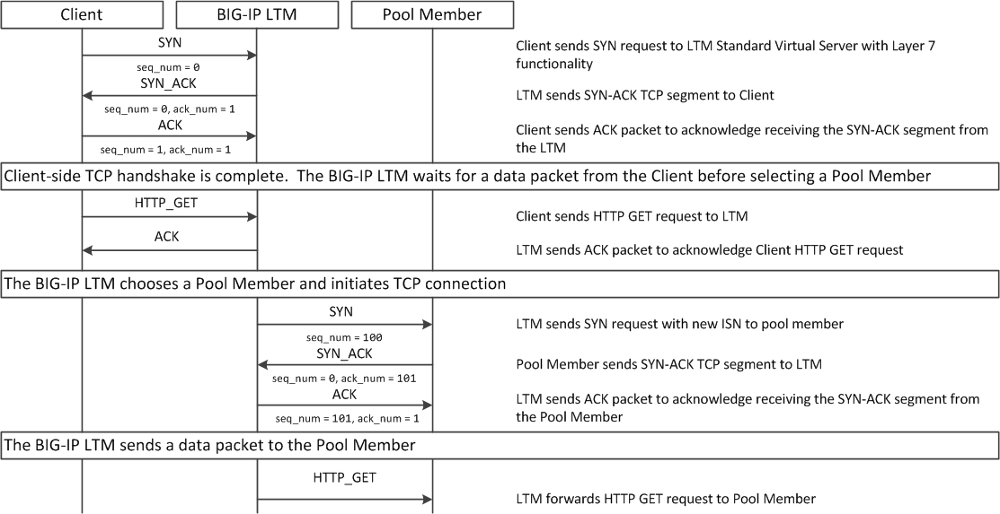

# list net self 10.1.10.240
net self 10.1.10.240 {
address 10.1.10.240/24
allow-service {
tcp:ssh
tcp:https
}
traffic-group traffic-group-local-only
vlan external
}Virtual Server
Table of Contents
Inbound Traffic Handling
| Name | Description | ||
|---|---|---|---|
Self IPs |
使用 external self IP 可以访问管理界面（需要配置 Port Lockdown，允许 443 端口）。 查看外部 vlan Self IP
访问管理界面
访问 ssh
|
||
NAT |
将内网的地址直接映射到外网，处于监听模式，接收所有发往NAT地址的连接 |
||
Virtual Servers |
|
||
SNATs |
是将某一个 VLAN 上的请求转发到一个地址 |
Packet Process Priority

Virtual Server Priority
| Priority | Type | Config |
|---|---|---|
1 |
Specific IP address and specific port |
|
2 |
Specific IP address and all port |
|
3 |
Network IP address and specific port |
|
4 |
Network IP address and all port |
|
5 |
All network and specific port |
|
6 |
All network and adll port |
|
VS Type
本部分说明不同 VS 类型的使用场景及注意事项。本部分的内容（包括图片）参照 https://support.f5.com/csp/article/K8082（该文章可以从互联网上找到）。
Standard
-
Standard 下客户端连接和服务器端连接是 1:1 的关系，基于全代理模式，客户端和服务器端的TCP连接完全独立
-
客户端和服务器端的 TCP 参数都是由 TMM 和双方分别协商
-
默认情况下以客户端源 IP 和后台建立连接，在打开 SNAT 的情况下用 SNAT 地址和后台建立连接
-
Standard VS 的端口永远对外开放，无论后台是否有服务器在工作
Standard 模式下根据 VS 是否关联 L7 层协议，连接建立和数据流程稍有不同，详细如下：
Standard VS 数据流程（仅TCP profile）

-
Client 和 LTM 三次握手建立 TCP 连接
-
LTM 选择一个 Pool Member
-
LTM 和 Pool Member 三次握手建立 TCP 连接
-
Client 开始发送数据
示例
// 1. create VS
create ltm pool echo_pool members add { 10.1.20.11:8877 { address 10.1.20.11 } 10.1.20.12:8877 { address 10.1.20.12 } }
create ltm virtual echo_vs destination 10.1.10.27:8877 ip-protocol tcp pool echo_pool
// 2. start the echo client, this will establish the tcp connection without send any data
./echoclient 10.1.10.27
// 3. check the connection tables
# show sys connection cs-server-addr 10.1.10.27
Sys::Connections
10.1.10.128:46262 10.1.10.27:8877 10.1.10.128:16587 10.1.20.11:8877 tcp 7 (tmm: 0) none none
// 4. check from the established connection from server(no data send)
# netstat -antulop | grep 8877 | grep ESTABLISHED
tcp 0 0 10.1.20.11:8877 10.1.10.128:16587 ESTABLISHED 4322/echoserver off (0.00/0/0)
// 5. send data
$ ./echoclient 10.1.10.27
time
1581765040
daytime
Sat Feb 15 03:13:32 2020
chargen
u$a71i0Rkk*1LkQ46d2Dqtau4Pn1cU;tZ8G'#Xsn_};-&)\<
// 6. exit the echo client, wait some time and check connection table
# show sys connection cs-server-addr 10.1.10.27
Sys::Connections
10.1.10.1:51015 10.1.10.27:8877 10.1.10.1:29694 10.1.20.12:8877 tcp 3 (tmm: 0) none none
// 7. Clean up
delete ltm virtual echo_vs
delete ltm pool echo_poolStandard VS 数据流程（L7 profile）

-
Client 和 LTM 三次握手建立 TCP 连接
-
LTM 等待 Client 端发送 7 层请求
-
Client 发送 HTTP GET
-
LTM 选择一个 Pool Member
-
LTM 和 Pool Member 三次握手建立 TCP 连接
-
LTM 将 HTTP 请求转发给
|
Note
|
和单纯的 TCP profile 关联的最大不同在于TMM必须等待到第一个客户端有效数据包之后才和后台服务器建立连接 |
示例
// 1. create vs
create ltm pool http_pool members add { 10.1.20.11:8081 { address 10.1.20.11 } 10.1.20.12:8081 { address 10.1.20.12 } }
create ltm virtual http_vs destination 10.1.10.20:80 ip-protocol tcp profiles add { http { } } pool http_pool
// 2. send 3 http request without send do GET method
curl http://10.1.10.20/hello
// 3. Clean up
delete ltm virtual http_vs
delete ltm pool http_poolPerformance (Layer 4)
-
TMM 只是负责客户端连接的分配和转发，不改变 TCP 连接中的任何参数，客户端和服务器自行协商 TCP 传输参数
-
Performance L4 可以有 PVA 加入实现硬件加速
-
Performance L4 VS上只有4层的iRules可以使用
-
默认状态下，新建连接的第一个包必须是Syn包，如果是其他的数据包比如ACK、RST等如果不在连接表中，则全部丢弃。
-
在 Fast L4 profile 打开 Loose close 和 Loose Initial 的时候对非Syn包也可以建立连接表
Performance L4 数据处理流程：
-
Client 发送 SYN Packet 到 LTM 开始三次握手
-
LTM 基于 PVA ASIC 芯片评估是否要加速
-
LTM 发送 SYN Packet 到 Node
-
Node 返回 SYN-ACK 到 LTM
-
LTM 但会 SYN-ACK 到 Client
-
Client 发送 ACK 到 LTM
-
LTM 发送 ACK 到 Node
-
Client 发送数据
示例
// 1. create VS
create ltm pool echo_pool members add { 10.1.20.11:8877 { address 10.1.20.11 } 10.1.20.12:8877 { address 10.1.20.12 } }
create ltm virtual echo_vs destination 10.1.10.27:8877 ip-protocol tcp pool echo_pool profiles add { fastL4 { } }
// 2. start echoclient establish connection to VS without send data
./echoclient 10.1.10.27
//3. connection table
# show sys connection cs-server-addr 10.1.10.27
Sys::Connections
10.1.10.1:52241 10.1.10.27:8877 10.1.10.1:29818 10.1.20.11:8877 tcp 30 (tmm: 0) none none
// 4. check the tcpdump external vlan
// 6. analysis the step 4 and 5 (extract the timestamp)
1> 03:40:36.711502 - Client send SYN to LTM
2> 03:40:36.713498 - LTM send SYN to Node
3> 03:40:36.714018 - Node response SYN/ACK to LTM
4> 03:40:36.714035 - LTM response SYN/ACK to Client
5> 03:40:36.714506 - Client send ACK to LTM
6> 03:40:36.714713 - LTM send ACK to Node
// 5. Clean up
delete ltm virtual echo_vs
delete ltm pool echo_poolPerformance (HTTP)
Performance (HTTP) 和 Standard VS HTTP 最大的不同是 Client 的连接建立完，如果服务器端没有可重用的连接，则不需要等待 Client 发送 GET 请求，直接开始初始化服务器端的连接。
-
Fast HTTP VS 仅用于 HTTP 协议
-
默认开启 One Connect Profile，对客户端连接进行聚合处理
-
默认开启 SNAT AutoMap，在服务器端收到的 TCP 连接请求都是来自于 TMM
-
没有会话保持功能，不能处理SSL，HTTPS
Fast HTTP VS数据流程-有空闲服务器连接

-
LTM 基于 OneConnect 参数进行初始服务器端连接，和 Pool Member 三次握手建立 TCP 连接
-
Client 和 LTM 三次握手建立 TCP 连接
-
Client 发送 HTTP GET
-
LTM 发送 GET 到 Pool Member
示例
// 1. create VS
create ltm profile fasthttp custome_fasthttp connpool-max-size 200 connpool-min-size 4
create ltm pool http_pool members add { 10.1.20.11:8081 { address 10.1.20.11 } 10.1.20.12:8081 { address 10.1.20.12 } }
create ltm virtual http_vs destination 10.1.10.20:80 ip-protocol tcp pool http_pool profiles add { custome_fasthttp { } }
// 2. execute one time http request
java -jar target/http-clients-0.0.1-SNAPSHOT.jar http://10.1.10.20/hello 1
// 3. check the connection tables
# show sys connection ss-client-addr 10.1.20.240
Sys::Connections
any6.any any6.any 10.1.20.240:61180 10.1.20.12:8081 tcp 17 (tmm: 0) none none
any6.any any6.any 10.1.20.240:61182 10.1.20.11:8081 tcp 17 (tmm: 0) none none
any6.any any6.any 10.1.20.240:61184 10.1.20.12:8081 tcp 17 (tmm: 0) none none
any6.any any6.any 10.1.20.240:61179 10.1.20.11:8081 tcp 17 (tmm: 0) none none
// 4. execute 100 times http request
java -jar target/http-clients-0.0.1-SNAPSHOT.jar http://10.1.10.20/hello 100
// 5. check the connection table and count all connections
# tmsh show sys connection ss-client-addr 10.1.20.240
# tmsh show sys connection ss-client-addr 10.1.20.240 | wc -l
19
// 6. monitor the netwoek interface packets
tcpdump -nni external host 10.1.10.20
tcpdump -nni internal host 10.1.20.240
// 7. send 1 time http request
java -jar target/http-clients-0.0.1-SNAPSHOT.jar http://10.1.10.20/hello 1
// 8. check the packets dump(both client side and server side)
05:30:16.577514 IP 10.1.10.1.55332 > 10.1.10.20.80: Flags [SEW], seq 2683069984, win 65535, options [mss 1460,nop,wscale 6,nop,nop,TS val 772593605 ecr 0,sackOK,eol], length 0 in slot1/tmm1 lis=
05:30:16.577532 IP 10.1.10.20.80 > 10.1.10.1.55332: Flags [S.], seq 551188448, ack 2683069985, win 4380, options [mss 1460], length 0 out slot1/tmm1 lis=/Common/http_vs
05:30:16.588335 IP 10.1.20.240.15924 > 10.1.20.12.8081: Flags [P.], seq 1:97, ack 1, win 65535, length 96 out slot1/tmm1 lis=/Common/http_vs
05:30:16.589085 IP 10.1.20.12.8081 > 10.1.20.240.15924: Flags [.], ack 97, win 29200, length 0 in slot1/tmm1 lis=/Common/http_vs
// 9. Clean up
delete ltm virtual http_vs
delete ltm profile fasthttp custome_fasthttp
delete sys connection ss-client-addr 10.1.20.240Fast HTTP VS数据流程-没有空闲服务器连接
-
Client 和 LTM 三次握手建立 TCP 连接
-
LTM 和 Pool Member 三次握手建立 TCP 连接
-
Client 发送 HTTP GET
-
LTM 发送 GET 到 Pool Member
示例
// 1. create VS
create ltm pool http_pool members add { 10.1.20.11:8081 { address 10.1.20.11 } 10.1.20.12:8081 { address 10.1.20.12 } }
create ltm virtual http_vs destination 10.1.10.20:80 ip-protocol tcp pool http_pool profiles add { fasthttp { } }
// 2. monitor the netwoek interface packets
tcpdump -nni external host 10.1.10.20
tcpdump -nni internal host 10.1.20.240
// 3. execute 1 times http request
curl http://10.1.10.20/hello
// 4. check the packets dump(both client side and server side)
05:46:41.820787 IP 10.1.10.1.56323 > 10.1.10.20.80: Flags [SEW], seq 1528209739, win 65535, options [mss 1460,nop,wscale 6,nop,nop,TS val 773572344 ecr 0,sackOK,eol], length 0 in slot1/tmm1 lis=
05:46:41.820804 IP 10.1.10.20.80 > 10.1.10.1.56323: Flags [S.], seq 3531133963, ack 1528209740, win 4380, options [mss 1460], length 0 out slot1/tmm1 lis=/Common/http_vs
05:46:41.822479 IP 10.1.10.1.56323 > 10.1.10.20.80: Flags [.], ack 1, win 65535, length 0 in slot1/tmm1 lis=/Common/http_vs
05:46:41.824021 IP 10.1.20.240.16379 > 10.1.20.11.8081: Flags [S], seq 3636797178, win 4380, options [mss 1460], length 0 out slot1/tmm1 lis=/Common/http_vs
05:46:41.824567 IP 10.1.20.11.8081 > 10.1.20.240.16379: Flags [S.], seq 2294369112, ack 3636797179, win 29200, options [mss 1460], length 0 in slot1/tmm1 lis=/Common/http_vs
05:46:41.824580 IP 10.1.20.240.16379 > 10.1.20.11.8081: Flags [.], ack 1, win 4380, length 0 out slot1/tmm1 lis=/Common/http_vs
// 5. check the connection tables
# show sys connection ss-client-addr 10.1.20.240
Sys::Connections
any6.any any6.any 10.1.20.240:16400 10.1.20.11:8081 tcp 3 (tmm: 1) none none
// 6. execute 100 times http request
for i in {1..100} ; do curl http://10.1.10.20/hello; done
// 7. check the connection table and count all connections
# tmsh show sys connection ss-client-addr 10.1.20.240
# tmsh show sys connection ss-client-addr 10.1.20.240 | wc -l
12
// 9. Clean up
delete ltm virtual http_vs
delete sys connection ss-client-addr 10.1.20.240Forwarding (Layer 2)
Forwarding (IP)
-
只能使用 Fast L4 Profile, 按照连接处理，类似于路由器工作，但不完全一样，在 Fast L4 Profile 中开启 Loose Initial 和 Loose Close 之后更为接近路由工作模式
-
所有穿过 Fowarding VS 的连接都将产生连接表
-
没有Pool Member，转发完全取决于本地路由
-
可以使用基于4层的Rules

Forwarding L3 VS 数据处理流程:
-
Client 开始三次握手，发送 SYN Packet 到 LTM
-
LTM 评估 Packet，找到目的地 IP 地址
-
LTM 发送 SYN 到对应的 Node
-
Node 返回 SYN/ACK 到 LTM
-
LTM 返回 SYN/ACK 到 Client
-
Client 发送 ACK 到 LTM（完成了三次握手）
-
LTM 发送 ACK 到 Node（服务器端也完成了三次握手）
-
Client 发送数据 Packet 到 LTM
-
LTM 转发对应 Packet 到 Node
示例
// 1. create vs
create ltm virtual forwarding_virtual destination 10.1.20.0:0 mask 255.255.255.0 ip-forward ip-protocol any
// 2. configure network make sure can access internal(Mac, add route)
sudo route -n add -net 10.1.20.0/24 10.1.10.240
sudo route -n flush
netstat -nr | grep 10.1.20
// 3. monitor the network interface
tcpdump -nni internal host 10.1.20.13
// 4. start echo client and send a request
$ ./echoclient 10.1.20.13
time
1581857485
// 5. check the packets
06:42:32.995112 IP 10.1.10.1.16867 > 10.1.20.13.8877: Flags [SEW], seq 2838415474, win 65535, options [mss 1460,nop,wscale 6,nop,nop,TS val 776899005 ecr 0,sackOK,eol], length 0 out slot1/tmm1 lis=/Common/forwarding_virtual
06:42:32.995675 IP 10.1.20.13.8877 > 10.1.10.1.16867: Flags [S.E], seq 829959214, ack 2838415475, win 28960, options [mss 1460,sackOK,TS val 6615604 ecr 776899005,nop,wscale 7], length 0 in slot1/tmm1 lis=/Common/forwarding_virtual
06:42:32.996057 IP 10.1.10.1.16867 > 10.1.20.13.8877: Flags [.], ack 1, win 2058, options [nop,nop,TS val 776899009 ecr 6615604], length 0 out slot1/tmm1 lis=/Common/forwarding_virtual
06:42:34.928735 IP 10.1.10.1.16867 > 10.1.20.13.8877: Flags [P.], seq 1:6, ack 1, win 2058, options [nop,nop,TS val 776900924 ecr 6615604], length 5 out slot1/tmm1 lis=/Common/forwarding_virtual
06:42:34.929484 IP 10.1.20.13.8877 > 10.1.10.1.16867: Flags [.], ack 6, win 227, options [nop,nop,TS val 6616087 ecr 776900924], length 0 in slot1/tmm1 lis=/Common/forwarding_virtual
06:42:34.929809 IP 10.1.20.13.8877 > 10.1.10.1.16867: Flags [P.], seq 1:12, ack 6, win 227, options [nop,nop,TS val 6616087 ecr 776900924], length 11 in slot1/tmm1 lis=/Common/forwarding_virtual
06:42:34.930049 IP 10.1.10.1.16867 > 10.1.20.13.8877: Flags [.], ack 12, win 2058, options [nop,nop,TS val 776900925 ecr 6616087], length 0 out slot1/tmm1 lis=/Common/forwarding_virtual
// 6. check the connection table
# show sys connection ss-server-addr 10.1.20.13
Sys::Connections
10.1.10.1:60894 10.1.20.13:8877 10.1.10.1:16867 10.1.20.13:8877 tcp 31 (tmm: 1) none none
// 7. clean up
delete ltm virtual forwarding_virtualReject
类似 Forwarding L3 类型，Reject 是在接收到 Packet 后进行评估直接拒绝转发。
-
Client 开始三次握手，发送 SYN Packet 到 LTM
-
LTM 关闭连接
-
LTM 发送 RST 到 Client
示例
create ltm virtual reject_ssh_virtual destination 10.1.20.0:22 mask 255.255.255.0 reject ip-protocol tcp